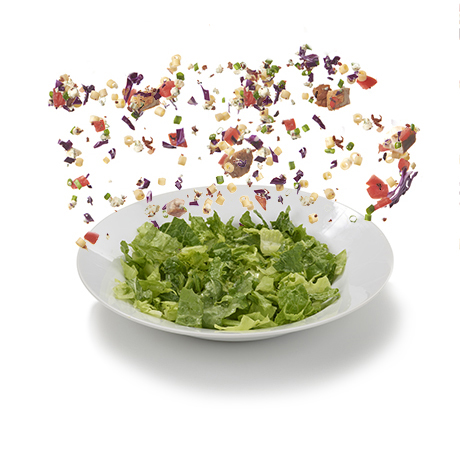

Salads

Explore Menu
- NEW! Spicy Chopped Chicken Salad
Our famous Chopped Salad with breaded Spicy Chicken and hot Giardiniera peppers.
- NEW! Chicken Pecan Salad with Bacon
Spring Mix, Grilled Chicken, Bacon, Tomato, Mozzarella and Cheddar Cheese, Red Cabbage and pecans with new Honey Peppercorn dressing! Contains nuts.
- Chopped Salad
A fan favorite, the Chopped salad is a perfect mix of flavor and crunch, packed with romaine and iceberg lettuce mix, ditalini pasta, diced chicken, crispy bacon, tomatoes, gorgonzola cheese, green onion, red cabbage and tossed with our famous, homemade House dressing.
- Caesar Salad
Everything includes a crispy bed of romaine lettuce topped with a hardboiled egg, croutons, and freshly grated parmesan cheese. Caesar dressing served on the side.
- Greek Salad With Grilled Chicken
Everything includes chopped romaine topped with grilled chicken breast, Feta cheese, sliced tomatoes, red onions, Kalamata olives, and cucumber. Roasted garlic vinaigrette dressing served on the side.
- Garden Side Salad
Everything includes Romaine lettuce topped with shredded red cabbage, cucumbers, shredded cheese, diced tomatoes, and croutons. Served with your choice of dressing on the side
The Homepage